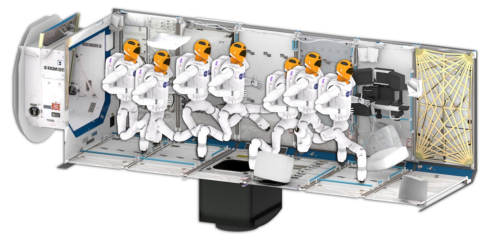
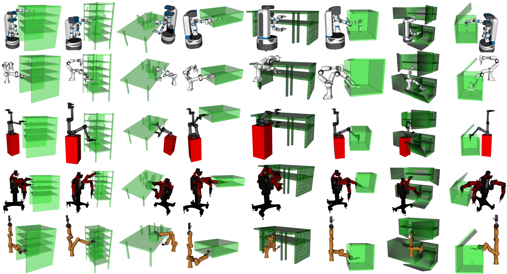
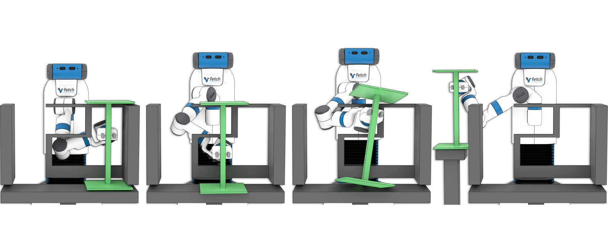
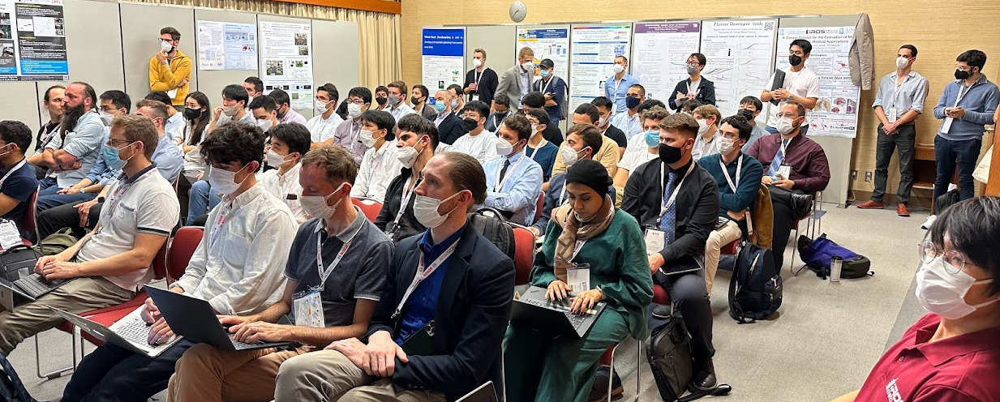
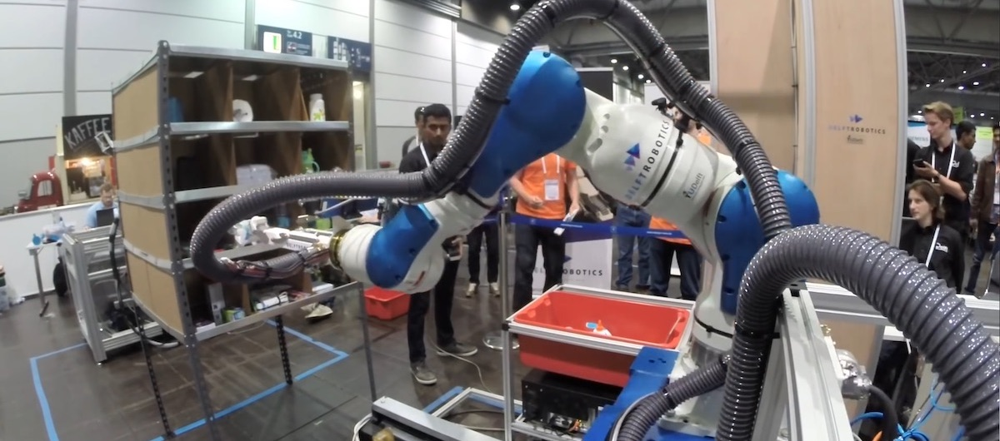
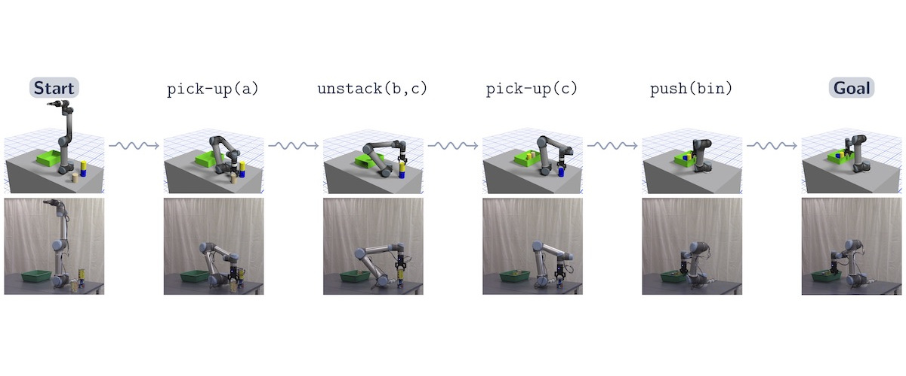
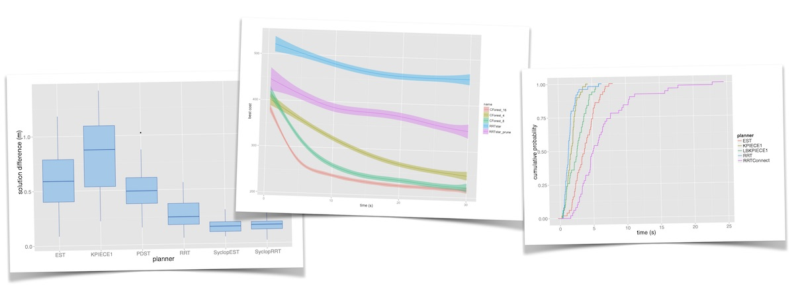
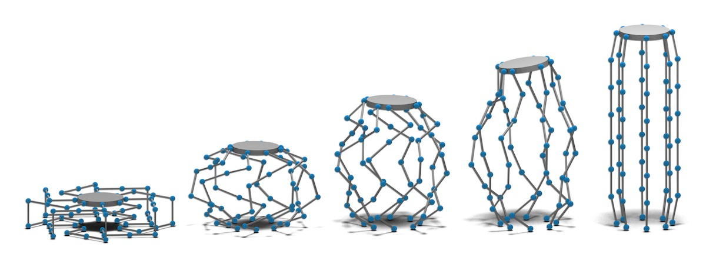

OMPL used in ROS/MoveIt
OMPL is the default planning library in MoveIt and has been used for many robots. Here, OMPL is used to plan footsteps for NASA's Robonaut2 aboard the International Space Station.

VAMP
We have integrated support for VAMP, a library for SIMD-accelerated collision checking and forward kinematics, which reduces planning times by several orders of magnitude. VAMP is used in this demo to rapidly replan to avoid collisions with moving obstacles.

MotionBenchMaker Dataset
MotionBenchMaker is a tool for generating motion planning problem datasets for evaluation or learning, and comes with 40 pre-fabricated problems shown here.

Multi-modal Motion Planning
OMPL has been used in multi-modal planners to achieve complex robot behavior, such as removing this barbell object from a puzzle box.

Evaluating Motion Planning Performance @ IROS 2022
EMPP @ IROS 2022 brought together researchers and industry professionals interested in evaluation of motion planners and highlighted OMPL.

Shelf Picking
In 2016 a team from Delft University won the Amazon Picking Challenge using OMPL in a tailored motion pipeline based on MoveIt.

Task and Motion Planning
The Kavraki Lab has used OMPL for the low-level motion planning in TMKit, a software package for combined task and motion planning.

Benchmarking
OMPL has extensive benchmarking capabilities. Benchmark results can be interactively explored on Planner Arena.

Constrained Motion Planning
OMPL supports planning for kinematically constrained robots. This parallel manipulator (included as a demo program) has over 150 degrees of freedom, but feasible motions can still be computed in seconds.
OMPL, the Open Motion Planning Library, consists of many state-of-the-art sampling-based motion planning algorithms. OMPL itself does not contain any code related to, e.g., collision checking or visualization. This is a deliberate design choice, so that OMPL is not tied to a particular collision checker or visualization front end. The library is designed so it can be easily integrated into systems that provide the additional needed components. OMPL has been used to plan motions for a broad range of robotic systems including: (mobile) manipulators, car-like systems, drones, and underwater vehicles.
OMPL includes complete examples on how to integrate with libraries that perform collision checking, kinematics, model loading, etc. By default, support for VAMP is enabled. VAMP is a library for SIMD-accelerated collision checking and forward kinematics, which reduces planning times by several orders of magnitude. We have also included support for Pinocchio, a library for forward/inverse kinematics and dynamics.
OMPL aims to make it straightforward to evaluate new planning algorithms on realistic robots in realistic settings through integrations with libraries like VAMP and Pinocchio. Developers of new algorithms are encouraged to use OMPL's benchmarking capabilities. Benchmark results can be explored interactively in Planner Arena, an external package like Planner Developer Tools or your own plotting tool!
Library Contents
- OMPL contains implementations of many sampling-based algorithms such as PRM, RRT, EST, SBL, KPIECE, SyCLOP, and several variants of these planners. See available planners for a complete list.
- All these planners operate on very abstractly defined state spaces. Many commonly used state spaces are already implemented (e.g., SE(2), SE(3), Rn, etc.).
- For any state space, different state samplers can be used (e.g., uniform, Gaussian, obstacle-based, etc.).
- API overview.
Getting Started
- The OMPL primer provides a brief background on sampling-based motion planning, and an overview of OMPL.
- Download and install OMPL.
- Demos and tutorials.
- Frequently Asked Questions.
- Learn how to integrate your own code with OMPL's build system.
- Learn more about how OMPL is integrated within other systems (such as MoveIt and CoppeliaSim).
- If interested in using Python, make sure to read the documentation for the Python bindings.
Other Resources
- Gallery of example uses of OMPL.
- If you use ROS, the recommended way to use OMPL is through MoveIt.
- Third-party contributions. (Contribute your own extensions!)
News & Events
- OMPL 1.7.0 has been released! This release includes new planners, bug fixes, and more.
- The Evaluating Motion Planning Performance workshop was hosted at IROS 2022 in Kyoto, Japan. This workshop brought together interested professionals in academia and industry to discuss motion planner evaluation. Videos of talks are available.
- Robowflex, a tool for motion planning researchers using OMPL through MoveIt was nominated for best paper for industrial robotics research with real-world applications at IROS 2022.
- HyperPlan, a tool for automatically configuring motion planners, is now available open source. Given a training dataset, this tool can optimize motion planning performance by tuning parameters, such as range, which projection to use, and so on.
- MotionBenchMaker, a motion planning dataset and tool to make datasets is now available. The pre-fabricated dataset contains 8 different problem with 5 different robots, for 40 challenging motion planning problems total.